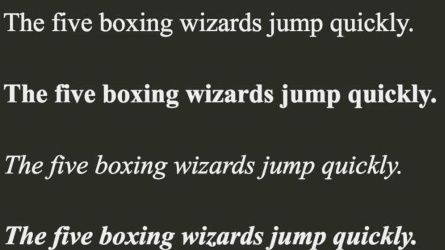
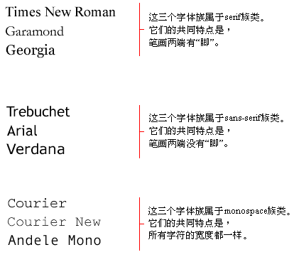
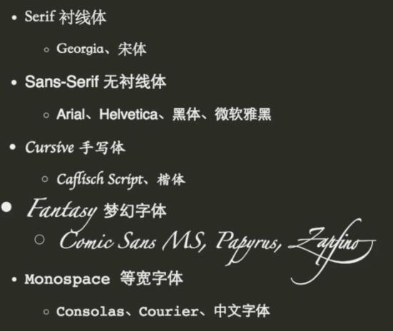
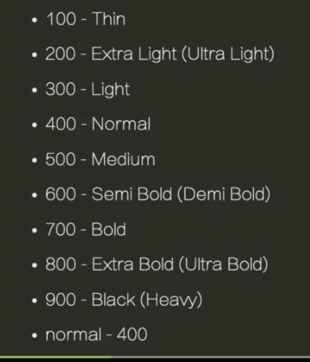

css-文本样式
字体
注意：字体是可以向下继承的,但是所有的表单元素都是无法继承body的字体属性的，
font-family
- 使用逗号分隔的
字体族或者族类名称 - 初始值有浏览器设置决定,可继承
有两种类型的名称可用于分类字体：
- 字体族名称（family-name）
字体族名称（就是我们通常所说的“字体”）的例子包括“Arial”、“Times New Roman”、“宋体”、“黑体”等等。它们特点是代表着不同的
粗细,字号大小
- 通用字体族（generic family）
一个通用字体族是一组具有统一外观的字体族。sans-serif就是一例，它代表一组没有“脚”的字体。

1
2
3h1{
font-family:Helvetica,sans-serif;
}
字体匹配算法
- 浏览器先获取一个系统字体列表
- 对于元素中每一个字符,使用font-family属性及其他属性进行匹配，如果能匹配就暂定改字体
- 如果步骤2没有匹配上，选择下一个可选的font-family执行步骤2
- 如果匹配到一个字体，但是字体中没有该字符，继续对下一个可选的font-family执行步骤2
- 如果没有匹配到字体，使用浏览器默认字体
font-family使用
- 英文字体放在中文字体前面
- 最后总是添加通用字体族
font-size
- 定义文字的大小,可使用px、百分比、em等做单位
- 取值
- 绝对值xx-small | x-small | small | medium | large | x-large | xx-large
- 相对值 larger | smaller
- 长度
- 百分数,相对于
父元素计算值
- 初始值为medium(有浏览器设置决定，一般16px)，可继承
em
- 一般是相对于
元素font-size的计算值 - 用在
font-size属性上时,是相对于父元素的font-size计算值1
2
3
4
5
6
7
8
9
10
11
12
13
14
15
16<body>
<div>
哈哈
</div>
<style>
body {
font-size: 16px;
}
div{
/* 这里的1.5em等于24px */
font-size:1.5em;
/* 这里的1em等于24px */
margin-left: 1em;
}
</style>
</body>
font-style
- 定义文字以斜体还是正常方式显示
- 取值：normal | italic(
字体族的斜体) | oblique(伪斜体,字体族中没有,一般算法弄斜,一般不用) - 初始值为normal,可继承
font-weight
- 定义文字的粗细程度
- 取值：normal(
400) | bold(700) | bolder(比继承值粗) | lighter(比继承值细) | 100 | 200 | … | 900 - 初始值为normal,可继承

line-height
- 元素所属的line box 所占高度
- 初始值为normal(具体值有浏览器决定),可继承
- 取值：<长度> | <数字> |<百分比>(相当于自身font-size的1.6倍)
- 段落文字一般取值1.4~1.8
1 | <section> |
1 | <section> |
font缩写
1 | <h1>this is Title</h1> |
web Fonts
字体的加载策略中我们可知，浏览器从本地把系统中安装的所有的字体列表列出来,然后一一去匹配，这时候假如我们想使用某一字体，但是不依赖用户的电脑，可以使用css3
web Font。web Font是指将字体文件放到服务器上,可以通过在css中去引用字体文件,让浏览器使用服务器上的字体,类似图片。
1 | <h1> I like javscript and css </h1> |
中文web Font
因为中文汉字的数量过多,如果中文也想使用字体的话，加载文件会超级大,解决办法是：将一些常用的字体进行裁剪，使用部分字体,可以减少字体库的大小
字体库CDN
text-align
- 定义文本在容器内的对齐方式
- 取值：left | right | center | justify
- 初始值有HTML的dir属性决定,可继承
dir文字从左到右还是从右到左的书写顺序text-align:justify最后一行不会两端对齐,所以当只有一行文字的时候,text-align:justify不起作用
letter-spacing
- 指定字符之间的间距
- 取值： normal | < length >
- 初始值为normal,可继承
1
2
3
4
5
6
7<h1> Letter Spacing 字符间距</h1>
<style>
h1{
/* 字体大小20%的字体间距 */
letter-spacing: 0.2rem;
}
</style>
word-spcing
- 指定单词之间的间距
- 取值： normal | < length >
- 初始值为normal,可继承
1
2
3
4
5
6
7<h1> word Spacing 字符间距</h1>
<style>
h1{
/* 中文不能识别,因为不知道那个是单词 */
word-spacing: 0.2rem;
}
</style>
text-indent
- 指定文本缩进
- 取值： normal | <长度> | <百分比>
- 初始值为0,可继承
1
2
3p{
text-indent:2em;
}
text-decoration
- 定义了文本的一些装饰效果，比如下划线、删除线等
- 初始值为none,可继承
- 其他值：underline | line-through | overline
white-space
html中的连续空格会合并成一个空格，遇到换行符时不换行,自动换行
- 指定空白符如何处理
- 取值：normal | nowrap(
不换行) | pre(html怎么显示它就怎么显示)
word-break
- 指定是否允许在单词中间换行
- 取值 normal | break-all(在所有的单词会折行) | keep-all(对于能放下的单词正常折行,对于长单词才折行)